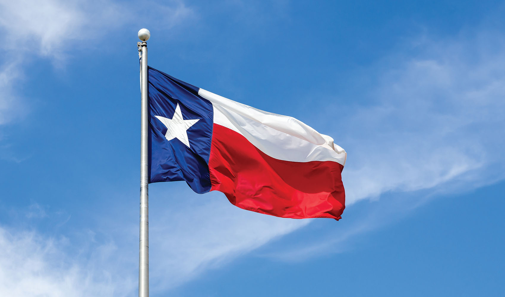
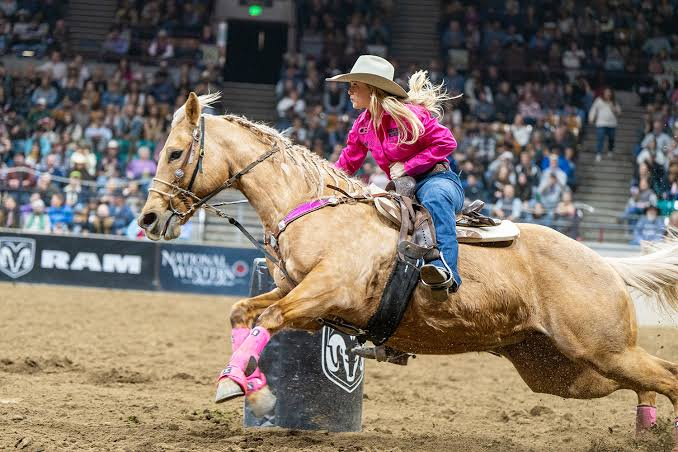

Mijn startpunt
Country muziek is voor mij meer dan alleen een muziekgenre.
Ik ben geboren en opgegroeid in Houston, Texas, waar Country muziek onderdeel is van de cultuur.
Je komt het bijvoorbeeld tegen bij:

De vlag van de staat Texas

Rodeo Day in Houston, Texas

Country Day in Houston, Texas

Festival Poster voor Rodeo Day in Houston, Texas